par(mfrow = c(1, 3))
for (h in c(1, 4, 12)) {
hist(faithful$waiting, breaks = seq(40, 100, by = h), prob = TRUE, col = "#FFCC00",
main = paste("bin width h =", h), xlab = "waiting time (min)")
}Probability Density Estimation 🏔️
MATH 4750 / MSSC 5750 Computational Statistics
Dr. Mehdi Maadooliat
Marquette University
MATH 4750 - Spring 2027
Probability Density Estimation
Histograms: bin width rules (Sturges, Scott, Freedman-Diaconis)
Frequency polygons and averaged shifted histograms
Kernel density estimation and bandwidth selection
Boundary kernels and reflection
Bivariate and multivariate density estimation
Density Estimation: The Problem
- Given \(X_1,\dots,X_n\stackrel{\text{iid}}{\sim}f\) (unknown), estimate \(f\) nonparametrically, i.e., without assuming a family.
- Uses: exploratory analysis (modes, skewness), simulation (smoothed bootstrap), classification, mixture assessment (EM, Ch 14).
- Accuracy: \(\text{MSE}(\hat f(x)) = \mathrm{Var}(\hat f(x)) + \mathrm{bias}^2(\hat f(x))\), integrated: \(\text{MISE} = \mathrm{E}\int(\hat f - f)^2\).
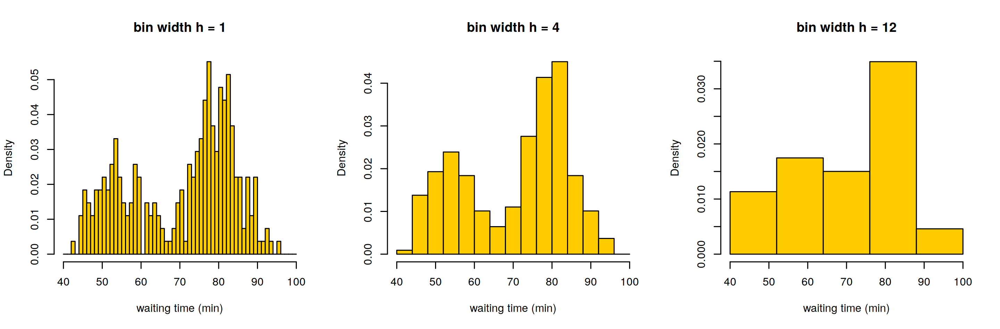
The Histogram as a Density Estimate
With bins \([t_k, t_{k+1})\) of width \(h\) and counts \(\nu_k\):
\[ \hat f(x) = \frac{\nu_k}{nh},\qquad t_k\le x < t_{k+1}. \]
- \(\mathrm{bias}(\hat f(x)) = O(h)\), \(\mathrm{Var}(\hat f(x)) = O\big(1/(nh)\big)\) \(\Rightarrow\) optimal \(h\propto n^{-1/3}\), MISE \(= O(n^{-2/3})\).
Three bin-width rules:
| Rule | Bin width / classes | Notes |
|---|---|---|
| Sturges | \(k = 1 + \log_2 n\) classes | R default; oversmooths for large \(n\) |
| Scott | \(\hat h = 3.49\,\hat\sigma\,n^{-1/3}\) | normal reference, MISE-optimal for normal |
| Freedman-Diaconis | \(\hat h = 2\,\text{IQR}\,n^{-1/3}\) | robust to outliers |
Examples 12.1 - 12.3: Rules in Action
Sturges Scott FD
11 19 25 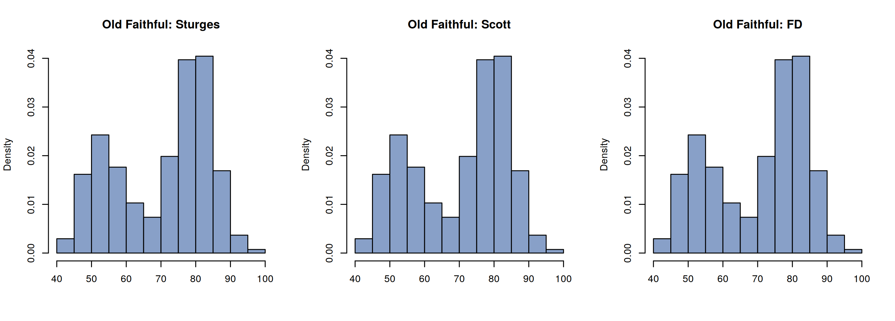
Estimating \(f(x_0)\) from a Histogram (Example 12.2)
Frequency Polygon (Example 12.4)
Linear interpolation of the histogram at the bin midpoints. Bias is \(O(h^2)\), optimal \(h = 2.15\,\sigma n^{-1/5}\) (normal reference).
h <- 2.15 * sd(waiting) * n^(-1/5)
br <- seq(min(waiting) - h, max(waiting) + h, by = h)
H <- hist(waiting, breaks = br, plot = FALSE)
mids <- H$mids; dens <- H$density
plot(H, freq = FALSE, col = "gray90", main = "Frequency polygon: Old Faithful waiting times", xlab = "")
lines(c(mids[1] - h, mids, mids[length(mids)] + h), c(0, dens, 0), lwd = 3, col = "#003366")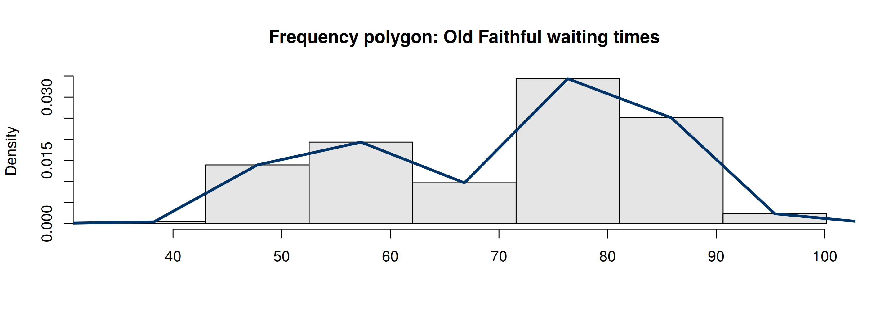
Averaged Shifted Histogram (ASH, Example 12.6)
Average \(m\) histograms with the same width \(h\) whose origins are shifted by \(h/m\): equivalent to a finer histogram with triangular weights.
ash1 <- function(x, h, m = 20, grid = seq(min(x) - h, max(x) + h, length = 400)) {
delta <- h / m
rowMeans(sapply(0:(m - 1), function(j) {
br <- seq(min(x) - h - j * delta, max(x) + 2 * h, by = h)
H <- hist(x, breaks = br, plot = FALSE)
H$density[findInterval(grid, br, all.inside = TRUE)]
}))
}
grid <- seq(35, 105, length = 400)
plot(grid, ash1(waiting, h = 6, grid = grid), type = "l", lwd = 3, col = "#C0392B",
xlab = "waiting", ylab = "density", main = "ASH: h = 6, m = 1 vs m = 20")
lines(grid, ash1(waiting, h = 6, m = 1, grid = grid), type = "s", col = "gray50")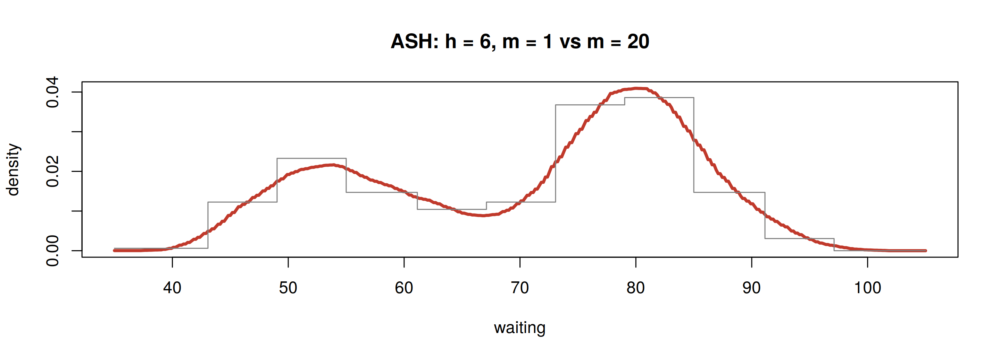
Kernel Density Estimation
From Histograms to Kernels
The kernel density estimator places a smooth bump at each observation:
\[ \hat f_h(x) = \frac{1}{nh}\sum_{i=1}^nK\!\left(\frac{x - X_i}{h}\right),\qquad K\ge 0,\ \int K = 1. \]
set.seed(4750); xs <- c(-1.5, -1, .2, .4, 1.8); h <- 0.4
gg <- seq(-3.5, 3.5, length = 400)
bumps <- sapply(xs, function(xi) dnorm((gg - xi) / h) / (length(xs) * h))
matplot(gg, bumps, type = "l", lty = 2, col = "gray40", xlab = "x", ylab = "", main = "KDE = sum of bumps")
lines(gg, rowSums(bumps), lwd = 3, col = "#003366"); rug(xs, lwd = 3)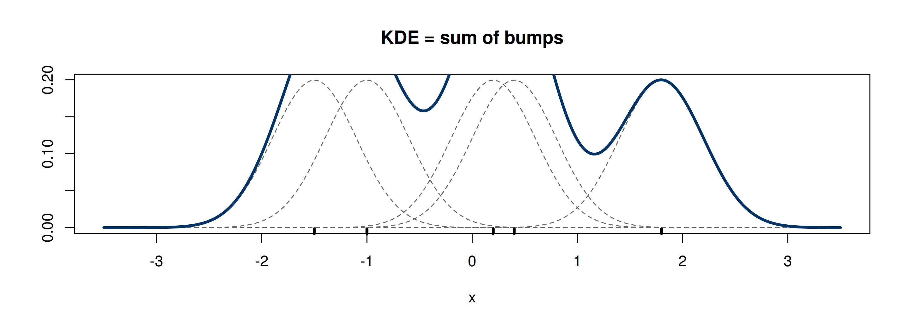
Kernels
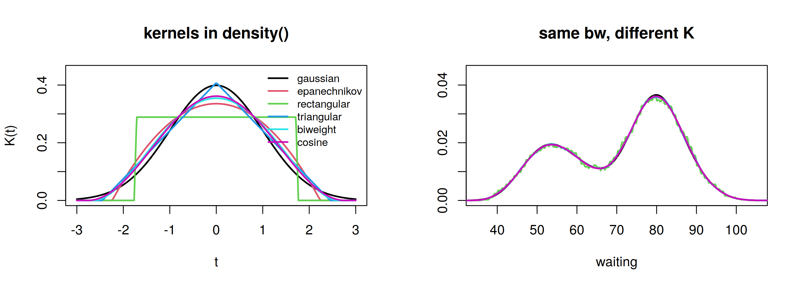
The choice of kernel matters little; the bandwidth \(h\) matters a lot.
Bias, Variance, and the Optimal Bandwidth
For a second-order kernel with \(\sigma_K^2 = \int t^2K(t)\,dt\) and \(R(g) = \int g^2\):
\[ \mathrm{bias}(\hat f_h(x))\approx\frac{h^2}{2}\sigma_K^2f''(x),\qquad \mathrm{Var}(\hat f_h(x))\approx\frac{f(x)R(K)}{nh} \]
\[ \text{AMISE}(h) = \frac{R(K)}{nh} + \frac{h^4}{4}\sigma_K^4R(f'')\quad\Rightarrow\quad h^* = \left(\frac{R(K)}{\sigma_K^4R(f'')n}\right)^{1/5}\propto n^{-1/5}. \]
- MISE rate \(O(n^{-4/5})\): better than the histogram’s \(O(n^{-2/3})\).
- Normal reference (Gaussian \(K\), normal \(f\)): \(h = 1.06\,\hat\sigma\,n^{-1/5}\); Silverman’s rule
bw.nrd0: \(h = 0.9\min(\hat\sigma, \text{IQR}/1.34)\,n^{-1/5}\).
Example 12.7: KDE of Old Faithful Waiting Time
nrd0 nrd ucv SJ
3.988 4.696 2.658 2.504 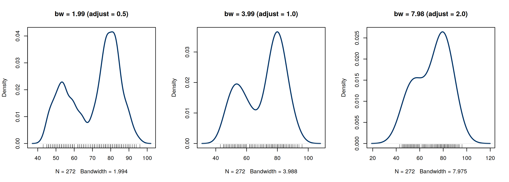
Data-Driven Bandwidths: Cross-Validation
Least-squares (unbiased) cross-validation minimizes an unbiased estimate of \(\text{ISE} - \int f^2\):
\[ \text{UCV}(h) = \int\hat f_h^2 - \frac2n\sum_{i=1}^n\hat f_{h,(-i)}(X_i). \]
ucv <- function(h, x) {
n <- length(x); d <- outer(x, x, "-")
int_f2 <- sum(dnorm(d, sd = sqrt(2) * h)) / n^2 # closed form for the Gaussian kernel
loo <- (rowSums(dnorm(d / h)) - dnorm(0)) / ((n - 1) * h)
int_f2 - 2 * mean(loo)
}
hs <- seq(1, 8, length = 60); u <- sapply(hs, ucv, x = waiting)
plot(hs, u, type = "l", lwd = 3, xlab = "h", ylab = "UCV(h)"); abline(v = hs[which.min(u)], lty = 2, col = 2)our_ucv bw.ucv
2.661 2.658 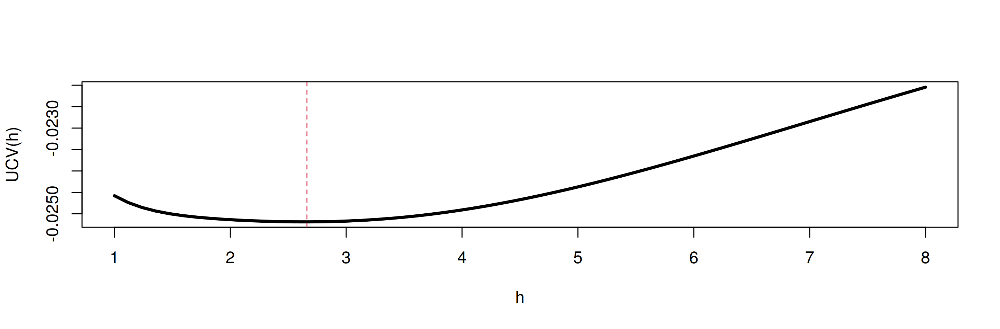
Example 12.8: KDE of Precipitation Data
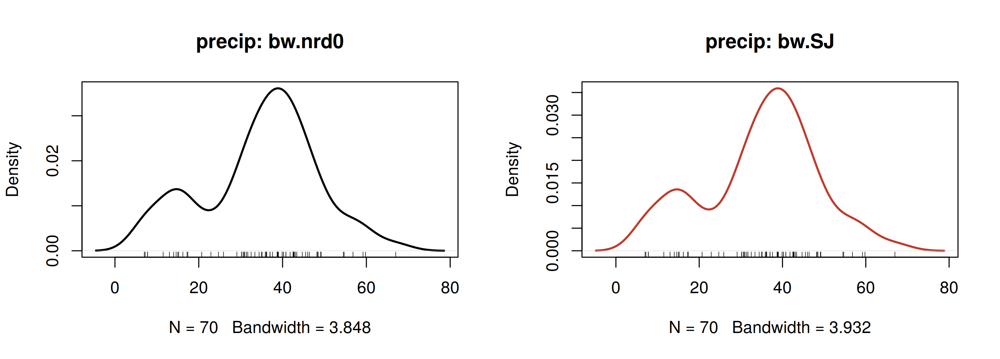
Example 12.9: Evaluating \(\hat f(x)\) at Arbitrary Points
Examples 12.10 - 12.11: Boundaries and the Reflection Technique
For \(f\) supported on \([0,\infty)\), the KDE puts mass below 0 and underestimates \(f\) near the boundary.
Reflection: augment the sample with \(-X_i\), estimate, then fold: \(\hat f_R(x) = 2\hat f_{\{X,-X\}}(x)\) for \(x\ge0\).
set.seed(4750); x <- rexp(1000, 1)
d <- density(x, bw = 0.1, n = 1024)
xx <- c(x, -x)
g <- density(xx, bw = 0.1, n = 1024)
a <- seq(0, 6, .01); ux <- a[a < 3.5]
plot(d, xlim = c(-0.5, 3.5), ylim = c(0, 1.1), lwd = 2, main = "Exp(1): ordinary vs reflected KDE")
lines(g$x[g$x >= 0], 2 * g$y[g$x >= 0], lwd = 2, col = "#C0392B")
lines(ux, dexp(ux), lty = 2, lwd = 2)
legend("topright", c("ordinary KDE", "reflection", "true"), col = c(1, "#C0392B", 1), lty = c(1, 1, 2), lwd = 2, bty = "n")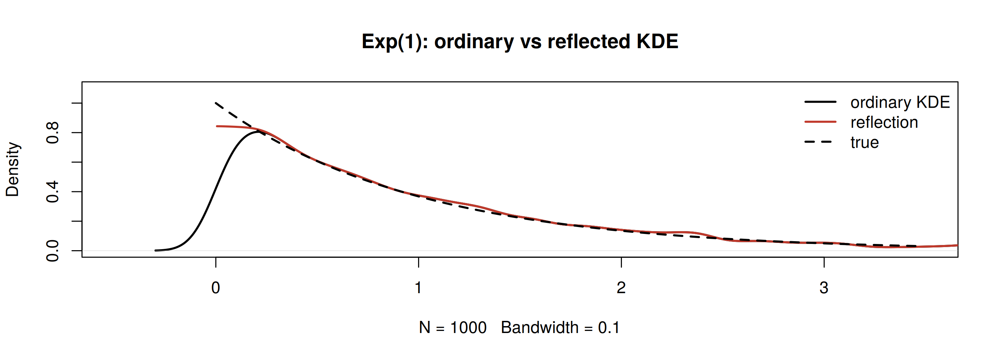
Bivariate and Multivariate Density Estimation
Example 12.12 - 12.13: Bivariate Frequency Table and Density Polygon
bin2d <- function(x, breaks1 = "Sturges", breaks2 = "Sturges") {
histg1 <- hist(x[, 1], breaks = breaks1, plot = FALSE)
histg2 <- hist(x[, 2], breaks = breaks2, plot = FALSE)
freq <- table(cut(x[, 1], histg1$breaks), cut(x[, 2], histg2$breaks))
list(call = match.call(), freq = freq, breaks1 = histg1$breaks, breaks2 = histg2$breaks,
mids1 = histg1$mids, mids2 = histg2$mids)
}
b <- bin2d(as.matrix(faithful))
par(mfrow = c(1, 2), mar = c(4, 4, 2, 1))
image(b$mids1, b$mids2, unclass(b$freq), col = hcl.colors(20, "YlOrRd", rev = TRUE), xlab = "eruptions",
ylab = "waiting", main = "2-d frequency table")
persp(b$mids1, b$mids2, unclass(b$freq), theta = 30, phi = 30, col = "#FFCC00", shade = .4,
xlab = "eruptions", ylab = "waiting", zlab = "count", main = "density polygon")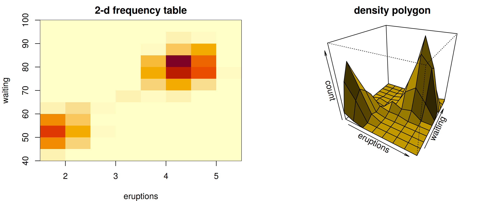
Example 12.15: Product Kernel Estimate
\[ \hat f(\mathbf{x}) = \frac{1}{nh_1\cdots h_d}\sum_{i=1}^n\prod_{j=1}^dK\!\left(\frac{x_j - X_{ij}}{h_j}\right),\qquad h_j\propto\hat\sigma_jn^{-1/(d+4)}. \]
set.seed(4750)
n <- 2000; p <- c(.2, .3, .5)
mu <- matrix(c(0, 1, 4, 0, 3, -1), 3, 2); Sigma <- diag(2)
i <- sample(1:3, replace = TRUE, prob = p, size = n)
xbvn <- t(sapply(i, function(k) MASS::mvrnorm(1, mu[k, ], Sigma)))
fhat <- MASS::kde2d(xbvn[, 1], xbvn[, 2], n = 60) # Gaussian product kernel, normal-reference bandwidths
par(mfrow = c(1, 2), mar = c(2, 2, 2, 1))
contour(fhat, main = "kde2d: contours"); points(mu, pch = 19, col = 2)
persp(fhat, phi = 30, theta = 20, d = 5, xlab = "x", ylab = "y", col = "#88A0C8", border = NA, shade = .5)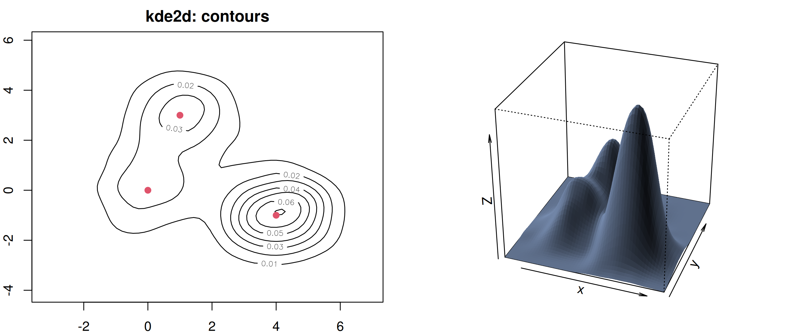
The Curse of Dimensionality in Density Estimation
- Optimal MISE rate for a KDE in \(d\) dimensions: \(O\big(n^{-4/(4+d)}\big)\).
d rate n_needed_for_1d_accuracy_of_n100
1 1 n^(-0.8) 100
2 2 n^(-0.67) 251
3 3 n^(-0.57) 631
4 5 n^(-0.44) 3981
5 10 n^(-0.29) 398107- To match the accuracy of \(n = 100\) in 1-d, we need enormous samples in 10-d. This is why PCA/dimension reduction (Ch 5) is used before density estimation.
Python Supplement
Summary
- Histogram: \(h\propto n^{-1/3}\) (Scott, FD); Sturges oversmooths for large \(n\).
- Frequency polygon and ASH: cheap, bias \(O(h^2)\).
- KDE: \(\hat f = \frac1{nh}\sum K((x - X_i)/h)\); bandwidth is what matters:
bw.nrd0,bw.SJ, cross-validation. - Boundaries need care (reflection); higher dimensions need much more data.